| ***NOTE: THIS IS A US SPECIFIC TOPIC.*** |
This procedure describes 1099 processing, which is only available for
For a PDF version of this process, visit the US Client Area website at http://support.coins-global.com/usa/publications/manuals-oa/OA_1099UsersGuideV4.pdf.
General Setup Maintenance
This section describes how to set up OA so that US
1. Flag
1099 processing is only available for
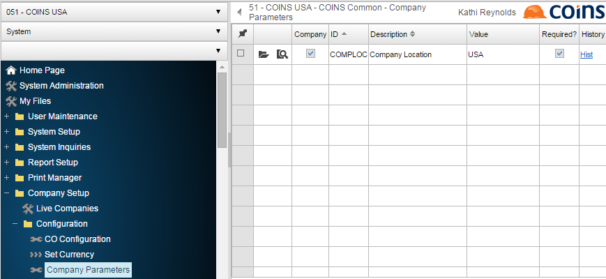
2. Central Repository -
1099 Info Tab
Each
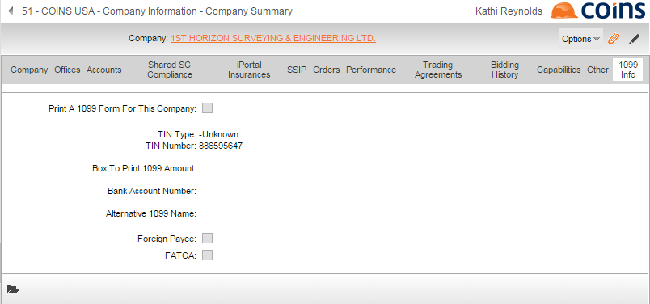
Fill in the fields on this tab according to the criteria below:
Print A 1099 Form For This
A
TIN Type
A drop down box for the Tax Identification Number Type with valid choices of EIN (Employer Identification Number), SSN (Social Security Number), and Unknown.
TIN Number
A numeric field for the Tax Identification Number.
Box To Print 1099 Amount
A drop down box with valid choices of 1, 2, 3, 4, 5, 6, 7, 8, 10, 13, 14, 15a, 15b, 16, and 18 that refer to the boxes on the printed 1099 form.
Bank Account Number
This optional data is the bank account number of the
Alternative 1099 Name
Allows you to override the
Foreign Payee
A
FATCA
Whether this company meets certain reporting requirements under the Foreign Account Tax Compliance Act (FATCA) requiring the FATCA
Company Tab
The Legal Name field found in Central Repository > Companies > Click on a Company Name > Company tab is the legal name of the company. It is used as the contractual name on orders and also in 1099 Forms.
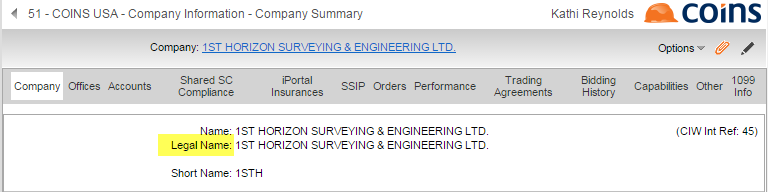
3. Define
The
This is maintained in Central Repository >
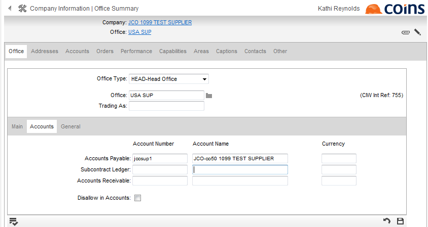
Steps for Processing 1099 Data
A 1099 Processing Menu can be found in the Central Repository module under the Administration menu. The steps involved for processing 1099 data are designed so that you can follow the six menu options in order from beginning to end. Steps can be run as many times as needed. Each menu option is discussed in more detail below.
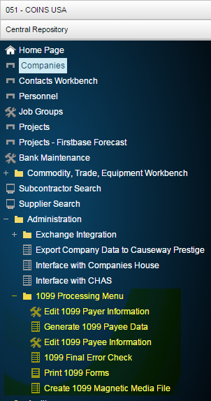
Step 1 - Edit 1099 Payer Information
A 1099 Payer is the
A sample data entry screen is shown below.
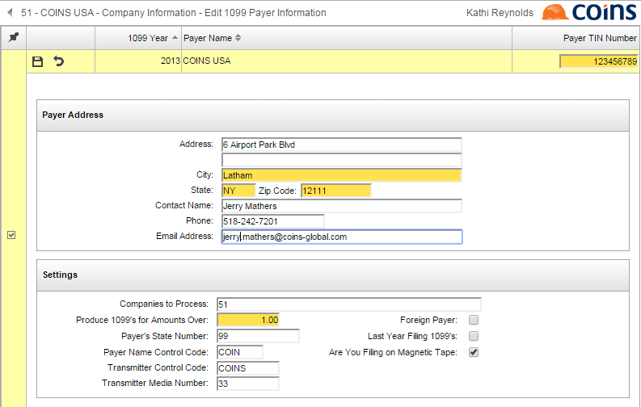
Some special fields of note in this function are:
Step 2 - Generate 1099 Payee Data
At this point in the processing, the Payer record has been created from Step 1, but no data has been created from which to print 1099's. This function creates the 1099 data known as the Payee Information. You must enter a 1099 Year if different from the default year, and click the button to the right of the Payer Name to select a Payer from a list that appears in a pop-up box.
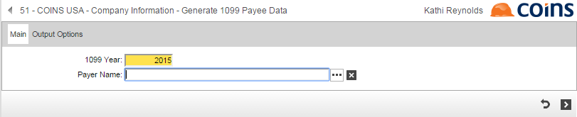
The following processing takes place when this function is run:
NOTE
A sample report from the Generate 1099 Payee Data function is shown below.
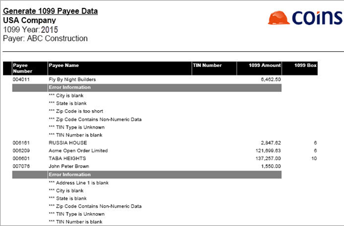
Step 3 - Edit 1099 Payee Information
This function allows you to view and edit the 1099 Payee Data that was created with the Generate 1099 Payee Data function from Step 2.
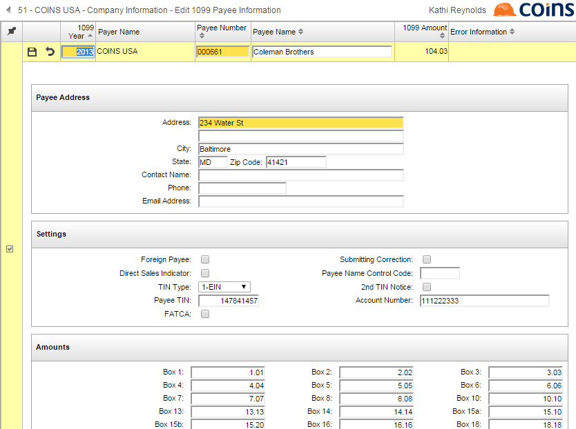
Some things to note about this function are:
Step 4 - 1099 Final Error Check
When the payee data has been reviewed and all errors have been fixed using Step 3, the 1099 Final Error Check function should be run to verify that all errors have been resolved. The selection screen for this function (shown below) works in the same manner as the Generate selection screen.
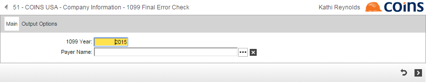
The 1099 Final Error Check can be run as many times as needed. It produces a report similar to the Generate 1099 Payee Information Report, but only errors are shown. Error checking is performed on data that are both generated and added.
Below is a sample 1099 Final Error Check Report with errors.
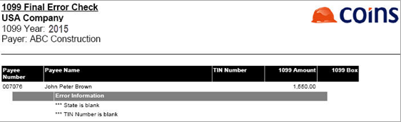
Below is a sample 1099 Final Error Check Report with no errors.
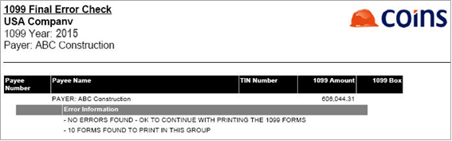
Step 5 - Print 1099 Forms
The Print 1099 Forms function allows 1099 data to be printed to a special preprinted 1099 form. If any 1099 records have an error, the number of error records is displayed with a message; no 1099's are printed until the errors are resolved.
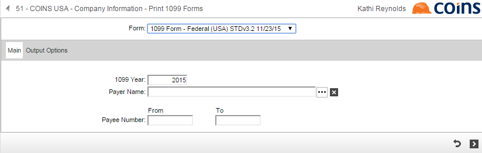
There are two slightly different formats for 1099 forms. The Form drop down box allows you to select either a Federal or Payee format. The Federal format is used for the form that is sent to the government. All other forms use the Payee format.
The 1099 Year and Payer Name fields on this selection screen are used in the same way as the Generate and Error Check selection screens, in other words, you can select a Payer for which to print 1099 data.
The From / To Payee Number field allows you to print one form, or a small subset of forms, from the entire group. This can be useful if part of a group of forms is destroyed from a paper jam or other printing problem.
Step 6 - Create 1099 Magnetic Media File
The Create 1099 Magnetic Media File function creates an ASCII file of 1099 data to be sent to the government for reporting. If any 1099 records have an error, the number of error records is displayed with a message, and the 1099 Magnetic Media File is not created until the errors are resolved. The selection screen for this function is shown below. It works in the same manner as the Generate selection screen.
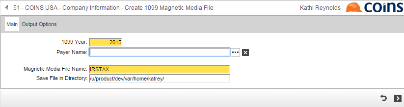
Additional selection screen fields on this screen are Magnetic Media File Name and Save File in Directory.
The government requires the file submitted to be named "IRSTAX", but you can change the name if you wish to do a test run. Just make sure that the final creation of the file is named "IRSTAX". Do not create the file under a different name and rename the file using an operating system command. This is because the file name is also stored in the ASCII file. Renaming the file at the operating system level does not change the name saved within the ASCII file.
The ASCII file is located on the
It is best to use the directory name that defaults, but this can be changed. Note that if the report generator does not have permissions to access the directory, no file is created.